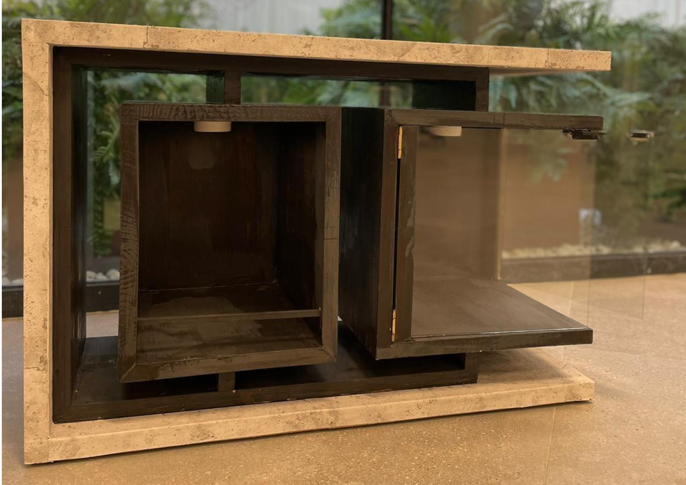
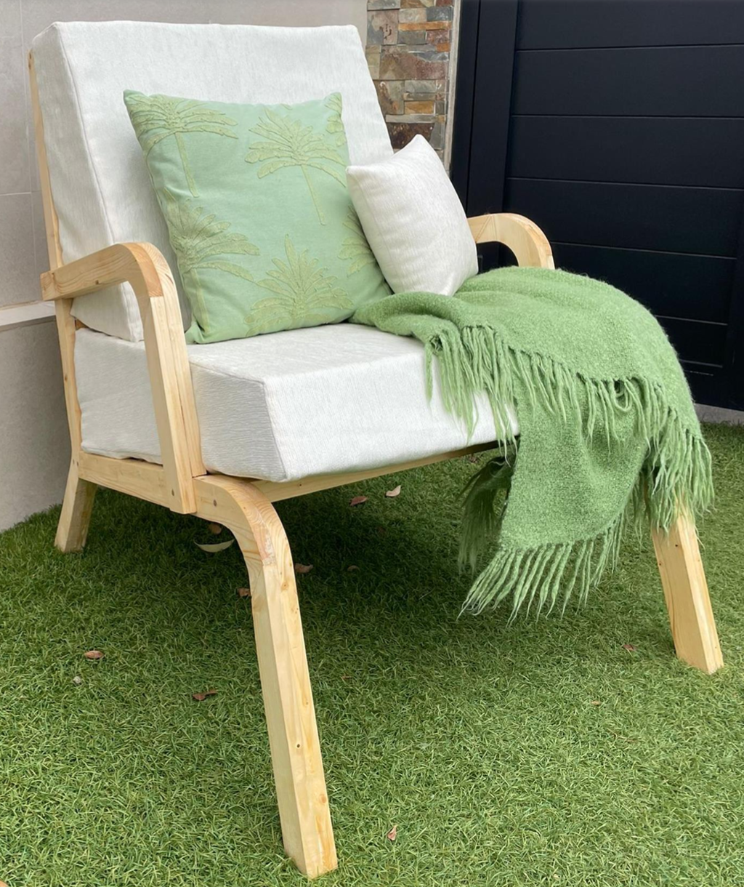
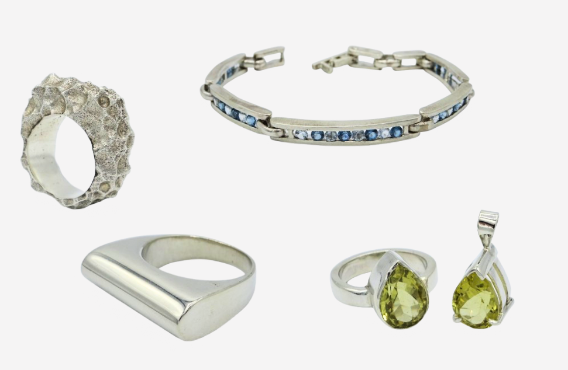

Proyectos
Aquí encontrarás una selección de mis proyectos destacados. Haz clic en cada uno para ver más detalles.

Bar Cabinet
Un mueble-bar multifuncional que combina diseño contemporáneo y acabados artesanales.

Bangtang
Set de petanca moderno en colaboración con Adidas, diseñado para unir tradición y modernidad.

Tero
Una butaca inspirada en el diseño danés, con materiales sostenibles y un enfoque en la ergonomía.

Joyería
Joyas diversas elaboradas en plata.